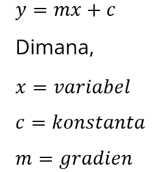
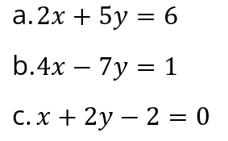
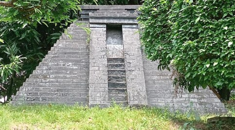
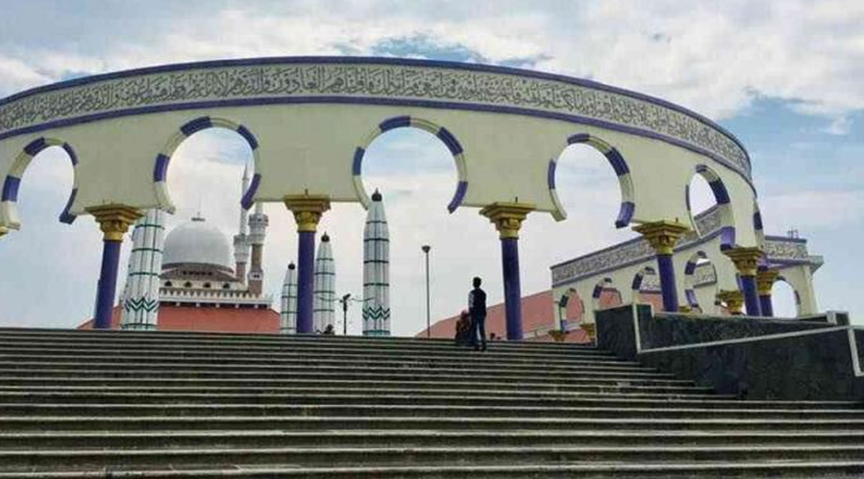

Setelah kalian menjawab Essential Question pada halaman sebelumnya, selesaikan Challenge berikut yang akan dipublikasikan!
Berikut langkah-langkah yang harus kalian laksanakan, silahkan dicermati!
1. Bentuklah kelompok yang beranggotakan 3-4 orang!
2. Lakukanlah eksplorasi berkaitan dengan kebudayan disekitar kalian yang berkaitan dengan persamaan garis lurus!
3. Tiap kelompok memilih kebudayaan yang berbeda.
4. Buatlah persamaan garis lurus dari data yang kalian peroleh!
5. Gambarlah grafik pada bidang koordinat Cartesius dari data yang kalian peroleh!
6. Temukan solusi atas tantangan di atas dan sajikan hasil pekerjaan kalian, dalam bentuk poster!
Untuk dapat menyelesaikan Challenge, peserta didik dapat mengikuti Guiding Resource, Guiding Question, Guiding Activities pada halaman selanjutnya.
Untuk lebih memahami tentang gradien, silakan saksikan video di bawah ini.
Setelah menyaksikan video di atas, apakah kemiringan suatu garis dapat disebut gradien? Apa itu gradien? dan Bagaimanakah bentuk gradien?
Sekarang, cobalah temukan permasalahan tentang kemiringan yang memiliki konsep yang sama dengan video di atas!

Gradien merupakan suatu nilai dari kemiringan suatu garis. Dapat dikatakan bahwa semakin miring suatu garis maka semakin besar gradien garis tersebut.
Perhatikan dua grafik tentang persamaan garis lurus berikut! Manakah yang mempunyai gradien lebih besar?
Untuk lebih meyakinkan jawaban kalian, simak materi di bawah ini!
Untuk bentuk umum persamaan garis lurus seperti pada grafik di atas, yaitu
Jadi, saat persamaan garis lurusnya merupakan bentuk umum persamaan garis lurus, maka nilai gradien dapat ditentukan langsung dengan nilai m.
Sekarang coba carilah nilai gradien pada dua grafik di atas!
Carilah gradien dari persamaan-persamaan garis lurus berikut.
Perhatikan bentuk dari candi Sukuh di bawah ini.

Candi Sukuh adalah sebuah kompleks candi Hindu yang terletak di lereng Gunung Lawu, sekitar 35 kilometer sebelah barat daya Solo, Jawa Tengah, Indonesia. Dibangun pada awal abad ke-15 Masehi, Candi Sukuh merupakan contoh penting dari arsitektur Majapahit yang unik dan menarik.
Kompleks candi ini memiliki ciri khas berupa struktur piramida yang menjulang tinggi dengan puncak yang menyerupai trapesium. Di dalam kompleks ini terdapat beberapa struktur utama, termasuk candi utama yang dihiasi dengan relief-relief erotis yang menggambarkan berbagai adegan kehidupan dan mitologi Hindu.
Candi Sukuh selain menjadi objek bersejarah dapat juga dijadikan sebagai objek pembelajaran matematika. Tujuan dari dijadikannya Candi Sukuh sebagai objek pembelajaran matematika adalah agar para generasi muda tetap mengenal salah satu peninggalan sejarah yang ada.
Perhatikan bentuk Candi Sukuh dari depan candi. Bagian depan Candi Sukuh memiliki bentuk seperti trapesium sama kaki yang kedua sisi sampingnya memiliki kemiringan.

Seorang siswa memotret Candi Sukuh dari sisi depan. Siswa tersebut melihat Candi Sukuh bagian depan seperti bentuk trapesium siku-siku sama kaki. Ia tertarik dengan susunan batu yang membentuk sisi miring Candi Sukuh. Dikarenakan ketertarikannya itu, ia berinisiatif untuk mengukur kemiringan Candi Sukuh. Dikarenakan kamera sudah memiliki perbandingan tersendiri dari ukuran objek dalam dunia nyata, maka siswa tersebut dapat mengukur kemiringan dari Candi Sukuh dengan berbantuan koordinat kartesius dan foto yang telah diambil. Perhatikan penjelasan di bawah ini untuk mengetahui kemiringan dari Candi Sukuh.
Perhatikan gambar di atas, sisi samping candi Sukuh memiliki kemiringan atau gradien garis lurus. Berikut cara menghitung gradien/kemiringan pada koordinat kartesius.
$m=\frac{\Deltax}{\Deltay}$
$\Leftrightarrow m=\frac{9,5}{7,5}$
$\Leftrightarrow m=\frac{1,9}{1,5}$
$\Leftrightarrow m=\frac{19}{15}$
Berikut merupakan rumus untuk mencari gradien suatu persamaan garis lurus jika diketahui beberapa syarat.
1. Gradien yang melalui dua titik
$m=\frac{y_{2}-y_{1}}{x_{2}-x_{1}}$
2. Gradien garis yang saling sejajar
$m_{1}=m_{2}$
3. Gradien garis yang saling tegak lurus
$m_{1}*m_{2}=-1$
Carilah gradien dari soal berikut.
a. Tentukan gradien garis yang melalui $A (5,2)$ dan $B (2,-1)$
b. Tentukan gradien garis $a$ yang melalui titik $(4,3)$ dan sejajar garis $b$ dengan persamaan $y=3x-1$.
c. Tentukan hubungan antara garis $p$ yang memiliki persamaan $2x+4y-3=0$ dan garis $q$ yang memiliki persamaan $2x-y+5=0$.
Untuk membantu dalam menyelesaikan challenge, lakukan aktivitas berikut secara berkelompok.
Masjid Agung Jawa Tengah merupakan masjid terbesar yang berada di provinsi Jawa Tengah, terletak di kota Semarang. Banyak wisatawan yang mengunjungi Masjid Agung Jawa Tengah untuk melakukan ibadah ataupun melihat-lihat keindahan arsitektur masjid.
Banyaknya pengunjung Masjid Agung Jawa Tengah membuat himbauan bagi pemerintah untuk menyediakan fasilitas yang memadai untuk segala kalangan. Sebagai bentuk kepedulian terhadap orang yang memakai kursi roda, pemerintah kota Semarang berencana akan membangun tangga darurat untuk orang-orang yang memakai kursi roda. Kriteria dari tangga darurat tersebut adalah sebagai berikut.
a. Memiliki tinggi 1,2 meter.
b. Kriteria kemiringan jalan tidak boleh melebihi 0,15.
Berapakah panjang lantai dasar terpendek agar pemerintah dapat membuat jalur yang aman untuk pengguna kursi roda?